|

|
|
|
|
Monitors typically don’t have linear outputs; when you request luminance level of 127, it is not exactly half the luminance of value 254. For experiments that require the luminance values to be linear, a correction needs to be put in place for this nonlinearity which typically involves fitting a power law or gamma ( ) function to the monitor output values. This process is often referred to as gamma correction.
) function to the monitor output values. This process is often referred to as gamma correction.
PsychoPy can help you perform gamma correction on your monitor, especially if you have one of the supported photometers/spectroradiometers.
There are various different equations with which to perform gamma correction. The simple equation (1) is assumed by most hardware manufacturers and gives a reasonable first approximation to a linear correction. The full gamma correction equation (3) is more general, and likely more accurate especially where the lowest luminance value of the monitor is bright, but also requires more information. It can only be used in labs that do have access to a photometer or similar device.
The simple form of correction (as used by most hardware and software) is this:
(1)¶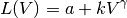
where  is the final luminance value, 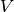 is the requested intensity (ranging 0 to 1),
is the final luminance value, 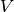 is the requested intensity (ranging 0 to 1),  ,
,  and are constants for the monitor.
and are constants for the monitor.
This equation assumes that the luminance where the monitor is set to ‘black’ (V=0) comes entirely from the surround and is therefore not subject to the same nonlinearity as the monitor. If the monitor itself contributes significantly to then the function may not fit very well and the correction will be poor.
The advantage of this function is that the calibrating system (PsychoPy in this case) does not need to know anything more about the monitor than the gamma value itself (for each gun). For the full gamma equation (3), the system needs to know about several additional variables. The look-up table (LUT) values required to give a (roughly) linear luminance output can be generated by:
(2)¶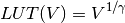
where V is the entry in the LUT, between 0 (black) and 1 (white).
For very accurate gamma correction PsychoPy uses a more general form of the equation above, which can separate the contribution of the monitor and the background to the lowest luminance level:
(3)¶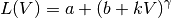
This equation makes no assumption about the origin of the base luminance value, but requires that the system knows the values of 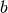 and as well as .
The inverse values, required to build the LUT are found by:
(4)¶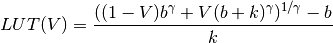
This is derived below, for the interested reader. ;-)
And the associated luminance values for each point in the LUT are given by:
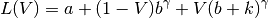
The difficulty with the full gamma equation (3) is that the presence of the value complicates the issue of calculating the inverse values for the LUT. The simple inverse of (3) as a function of output luminance values is:
(5)¶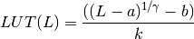
To use this equation we need to first calculate the linear set of luminance values, , that we are able to produce the current monitor and lighting conditions and then deduce the LUT value needed to generate that luminance value.
We need to insert into the LUT the values between 0 and 1 (to use the maximum range) that map onto the linear range from the minimum, m, to the maximum M possible luminance. From the parameters in (3) it is clear that:
(6)¶
Thus, the luminance value, L at any given point in the LUT, V, is given by
(7)¶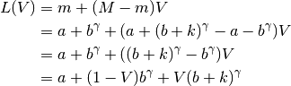
where is the position in the LUT as a fraction.
Now, to generate the LUT as needed we simply take the inverse of (3):
(8)¶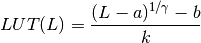
and substitute our 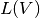 values from (7):
(9)¶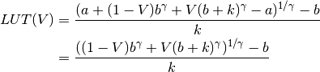
| [2] | Pelli, D. G., & Zhang, L. (1991) Accurate control of contrast on microcomputer displays. Vision Research 31, 1337-1350. |